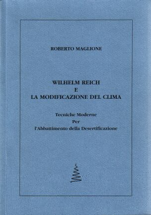

| Home | ||||
|
||||
| |
||||
| Indice | Ringraziamenti | Prefazione | ||||
|  Buch von Roberto Maglione erschienen im Jahr 2004 Wilhelm Reich e la modificazione del clima Tecniche moderne per l'abbattimento della desertificazione Bestellung über Roberto Maglione: robert_jumper@yahoo.it |
"In questo lavoro, Roberto Maglione ha intrapreso il difficile compito
di scrivere una overview scientifica dell'argomento, partendo dai primi
lavori di Reich, che risalgono agli anni '50, fino a quelli più recenti di
ricercatori e scienziati che hanno seguito il lavoro di Reich. Ha trattato
l'argomento con attenzione, evitando le trappole dell'entusiasmo esagerato o
dello scetticismo, attenendosi ai fatti ed a ciò che è stato dimostrato
scientificamente. È un lavoro che dovrebbe, in un mondo razionale, attirare
l'attenzione di scienziati responsabili e competenti, di privati cittadini e
di funzionari governativi che si preoccupano del benessere dell'umanità e
dei grossi disastri che ripetutamente si abbattono sul territorio a causa
della siccità e dell'avanzare della desertificazione."
James DeMeo, PhD Roberto Maglione, ingegnere, ha lavorato per numerosi anni nel settore esplorativo di una multinazionale petrolifera. Attualmente è responsabile della Comunicazione Scientifica in una società leader mondiale nel settore della bioingegneria cardiovascolare. È autore di un testo di carattere scientifico (Reologia ed Idraulica dei Fluidi di Perforazione, Cusl, 1999, 21 edizione) e di oltre 70 articoli tecnici. È membro di numerose associazioni scientifiche.
|
|||
|
|
||||
|
|
|
| Indice | |
| III | Ringraziamenti |
| V | Prefazione |
| 1 | Introduzione |
| 11 | Wilhelm Reich. Vita ed opere |
| 14 | - Il periodo europeo (1897-1939) |
| 22 | - Il periodo americano (1939-1957) |
| 33 | Metodi tradizionali di intervento sul clima |
| 49 | L'ingegneria orgonica cosmica |
| 52 | - La fisica orgonica |
| 58 | - Le tecniche di cloudbusting |
| 66 | - Il decalogo di Reich |
| 71 | Il cloudbusting dopo Reich |
| 73 | - Le attività di ricerca di Richard Blasband |
| 76 | • La rimozione della DOR e la riduzione della siccità |
| 90 | • La deviazione degli uragani ed altri interventi |
| 97 | Il cloudbusting in tempi recenti. Gli esperimenti di James DeMeo |
| 106 | - Il cloudbusting in USA |
| 126 | - Il cloudbusting in Europa |
| 130 | - Il cloudbusting in Africa |
| 143 | Il cloudbusting nel mondo |
| 143 | - Bernardo Zanini |
| 150 | - Trevor J Constable |
| 157 | - Mirko Kulig |
| 160 | - L'esperienza di altri autori |
| 164 | Glossario |
| Ringraziamenti È difficile stabilire perché si scrive un libro, soprattutto su un argomento così difficile e complesso come la modificazione e la regolazione del clima atmosferico. Non credo che alla base ci siano motivazioni professionali, visto che molto spesso si scrive nei ritagli di tempo e di riposo da un altro lavoro, oppure giustificazioni di tipo economico. Molto più semplicemente l'autore potrebbe avere un messaggio, conscio od inconscio che sia, da trasmettere e lo fa nella maniera a lui più congeniale. Quest'ultima potrebbe essere la ragione per cui ho pubblicato il presente libro che ho incominciato a scrivere oltre 5 anni fa. Divulgare cioè alcune delle scoperte dell'ultimo Wilhelm Reich meno conosciute e forse, anche fra le meno comprese e più controverse: il cloudbusting o la regolazione del clima atmosferico. Non è stato facile portare a termine questo lavoro sia per la complessità dell'argomento che per la difficoltà di reperire il materiale adatto. Devo ringraziare molte persone che mi hanno aiutato in tutti questi anni e hanno contribuito alla sua realizzazione: James DeMeo, direttore dell'Orgone Biophisycal Research Laboratory di Ashland (Oregon), per le informazioni tecniche sul cloudbuster ed inerenti all'attività di ricerca da lui svolta nel corso degli ultimi 30 anni, oltreché per il permesso di utilizzare il materiale relativo alle sue esperienze di campo; Bernd Senf della Fachhochschule für Wirtschaft di Berlino per le informazioni relative ai test di campo in Namibia ed Eritrea e per il materiale fotografico; Richard Blasband direttore scientifico del Center for Functional Research di Tiburon (California) per il materiale relativo ai suoi pionieristici esperimenti; Trevor J Constable e George Wuu dell'Etheric Rain Engineering Pte Ltd di Singapore per le informazioni sulla loro pluriennale attività e sul permesso di utilizzare il materiale fotografico relativo alle loro operazioni; Bernardo Zanini e Carmelodi Doz per la loro esperienza e tutto il materiale che mi hanno messo a disposizione sulla loro decennale attività di ricerca; Mirko Kulig per avermi fornito il materiale relativo alle sue esperienze; il Wilhelm Reich Museum per il permesso di utilizzare il materiale fotografico relativo all'attività di Reich; Carlo Splendore per le lunghe e continue discussioni sulla fisica orgonica, i preziosi consigli sul contenuto scientifico del libro e per la minuziosa revisione del manoscritto finale; Carlo Albini per la revisione ed i commenti critici della versione finale del libro; ed inoltre Franco Arborio, Bruna Bortolozzo e Cristina Vassarotto per le loro critiche considerazioni sull'argomento. Infine, un'affettuoso ringraziamento ad Ornella per i suoi consigli e per la sua infinita pazienza. RM Moncrivello, 12 luglio 2003 |
|
| Prefazione "Discovery means seeing something everybody has seen and thinking something nobody has ever thought." Albert Szent-GyörgiQuando Roberto Maglione, mi chiese di scrivere un'introduzione al suo libro sulle scoperte di Wilhelm Reich in ambito atmosferico, provai sensazioni contrastanti e mi posi molti interrogativi. La Cosmic Orgone Engineering o cloudbusting, come è più nota nel linguaggio comune, è fra le più imponenti e potenzialmente benefiche scoperte di Reich, ma anche la più controversa e, purtroppo, quella potenzialmente più pericolosa, se non utilizzata con considerevole attenzione e cautela. Molti, compreso me, avevamo tenuto per anni private tutte le informazioni su questo argomento, considerandolo una materia di discussione all'interno di gruppi di persone altamente fidate, pur rimanendo abbastanza disponibili a discutere apertamente le altre controverse scoperte di Reich, come l'accumulatore di energia orgonica e la sessuo-economia. Mi chiesi se il libro avesse trattato Reich e il difficile argomento in modo adeguato o se lo avesse presentato in modo eccessivamente meccanicistico o perfino mistico, il che, per esempio, è tipico di ciò che si può trovare sulla rete globale di Internet. Sono contento nel dire che questo nuovo libro ha concretizzato le mie speranze e non le mie paure. Senza voler banalizzare né esagerare le cose, in quasi 30 anni di esperimenti in campo con il cloudbuster ho apprezzato sempre più l'enorme potenza e le capacità del continuum di energia orgonica che esso utilizza. È questo continuum di energia, un tempo conosciuto come un etere dinamico nello spazio, la cui presenza è stata investigata e dimostrata negli anni '20 dal fisico Dayton Miller, a regolare il nostro clima alle sue fondamenta. Dal punto di vista tecnico, abbiamo dimostrato già da molti anni, con sistematici studi di campo ed utilizzando dati ufficiali e metodi classici di analisi scientifica, la validità delle originali asserzioni di Reich risalenti agli anni '50. Posso affermare che siamo ora in possesso di mezzi tecnici atti a porre fine alla siccità e rinverdire i più aridi deserti del mondo, sempre che lo si voglia. Tecnicamente, posso dirlo con sicurezza, questo ora è possibile. Comunque, dal punto di vista dell'ordinamento sociale, stiamo ancora affrontando grossi e spesso insormontabili ostacoli. Dopo decenni di indagini cliniche e ricerche di laboratorio, che lo portarono alla scoperta del cloudbuster, per un anno Reich effettuò operazioni di cloudbusting, scrupolosamente mirate, rinverdendo i deserti vicino a Tucson, in Arizona. Poco tempo dopo, la peste emozionale, attiva nel giornalismo e nell'ordinamento giuridico americano ed in collaborazione con il Governo statunitense, riuscì a spegnere la brillante luce emanante dalla sua scoperta. II cloudbuster fu quasi completamente dimenticato. Tuttavia, i suoi più stretti collaboratori riuscirono a tenere accesa la torcia di tale conoscenza, e continuarono le ricerche sull'energia vitale, inclusa quella relativa al cloudbuster. In quel periodo ero un bambino e le prime letture di Reich, che feci durante la mia adolescenza, mi colpirono per la chiarezza delle sue idee, i suoi potenziali rivoluzionari, e per la sfida che lanciava all'ansimante scienza ortodossa. Le sue argomentazioni sui processi viventi in natura confermarono molte delle sensazioni che andavo sviluppando osservando attentamente la natura in quello che era un tempo il paradiso tropicale del sud della Florida, che più tardi fu avvelenato, spianato e distrutto per diventare la giungla di cemento chiamata Miami. Da bambino, vedevo e sentivo il processo del vivente in natura, ma non avevo parole per esprimerlo e nessuna spiegazione mi veniva data dai miei insegnanti. Sono stato educato in scuole che insegnavano le cose e la scienza dal punto di vista inanimato, mentre l'universo del vivente, la natura pulsante, che si trovava sia dentro che al di fuori di me, non veniva mai discussa né tanto meno presa in considerazione. Reich, invece, si tuffava dritto all'interno di questo oceano di energia plasmatica vivente, e ne descrisse le proprietà, le funzioni e la struttura. Nuotava liberamente, immergendosi nelle profondità, mentre gli altri stavano semplicemente sulla superficie. Leggere Reich cambiò completamente la mia vita, e mi indusse a voler conoscere con certezza se le sue affermazioni erano vere od erano pure illusioni e fantasie, come gli scettici affermavano. E così studiai e collaborai con quegli scienziati che già seguivano gli insegnamenti di Reich, imparando molto da loro. Costruii e testai l'accumulatore di energia orgonica, confermando i suoi potenti effetti. In seguito effettuai, presso il Dipartimento di Meteorologia dell'Università del Kansas, i primi studi accademici sul cloudbuster di Reich, che confermarono il funzionamento dello strumento e la validità del metodo, proprio come Reich asseriva. Questa ricerca costituì sia un passo avanti nell'ordinamento sociale di quel periodo che una validazione scientifica del lavoro di Reich, ma creò anche nuovi ed improvvisi attacchi ed ostacoli alle ricerche che stavo portando avanti. Tuttavia, in seguito, furono eseguite, da una mezza dozzina di ricercatori, ulteriori sperimentazioni con il cloudbuster mirate a ridurre la siccità negli Usa. Queste aggiunsero ulteriori conferme dell'efficacia della tecnologia. I risultati di queste esperienze furono tutti pubblicati su riviste specializzate. Qualche anno dopo, con l'aiuto di alcuni collaboratori, organizzai e diressi le prime prove sistematiche sul campo con il cloudbuster, negli aridi deserti dell'Arizona, Israele, Namibia ed Eritrea, in Africa. Tutti questi studi sono riassunti nel presente libro. In tutti i casi, perfino ai margini del gigantesco deserto del Sahara, il cloudbuster ha dimostrato la sua efficacia. Un'atmosfera surriscaldata, fosca e stagnante veniva, solitamente nel giro di qualche giorno di duro lavoro, prontamente sostituita da magnifiche e possenti nubi foriere di pioggia, che riversavano umidità vitale in territori secchi e polverosi. Testimoniammo lo sbocciare di fiori e la formazione di nuovi laghi in quelle aride distese di terra, che in precedenza erano polverose e secche, e dove solo qualche misera goccia di pioggia era caduta in precedenza. Fatti che nessuno poteva pensare fosse possibile si realizzassero. Nella arida e secca Terra Santa, sofferente sotto i colpi della doppia piaga del disastro ambientale e sociale, io ed i miei collaboratori testimoniammo spettacolari cambiamenti dell'atmosfera, con repentini mutamenti del clima da secco ad umido, da caldo a freddo. con colline rinverdite, riempimento di laghi e cime di montagne coperte di neve. Dovevamo darci dei pizzicotti per essere sicuri che non stavamo sognando, o che non eravamo stati magicamente trasportati in Svizzera, invece di trovarci ai margini del Sahara. Durante la nostra più ambiziosa impresa, il quinquennale progetto in Eritrea, Africa, ampie regioni del Sahel furono rinverdite e rese erbose, riducendo l'importazione annuale di cibo di quella piccola nazione di decine di milioni di dollari. Nuovi e giganteschi laghi, troppo grandi per poter vedere le opposte rive, apparvero come per miracolo nelle aree a valle del Nilo, all'interno del cuore del Sahara, dopo solo qualche anno di cloudbusting applicato in modo razionale. Tuttavia, mentre la gente comune celebrava i risultati del nostro lavoro, solo in rare occasioni abbiamo trovato supporto a livello ufficiale. Perfino di fronte ai più evidenti e positivi risultati, ottenuti con una pioggia eccezionale che aveva posto fine ad una forte siccità, eravamo frequentemente soggetti ad attacchi da parte dei meteorologi e dei funzionari ortodossi, quasi fossimo dei praticanti di qualche tipo di magia nera che essi non potevano capire e con cui non volevano avere niente a che fare. Ma il cloudbusting non è magia, esso è una combinazione di scienza naturale ed arte, che richiede certamente la conoscenza della scienza attuale, della meteorologia e delle materie tecniche, ma anche di sentire e vedere il linguaggio espressivo del vivente che appare in Natura. Questo ci aiuta a capire cose altrimenti inspiegabili come la siccità, al suo livello più profondo, fornendoci anche nuovi approcci per agire in modo costruttivo e positivo su di essa. I cambiamenti ambientali che ho descritto furono dettagliatamente documentati per i posteri, benché non ho il minimo dubbio che il lettore che ha scarsa familiarità con questo argomento difficilmente crederà a ciò che sto scrivendo. Se non fossi stato testimone di questi eventi, probabilmente anch'io sarei uno scettico. Ci si può razionalmente chiedere: perché non si è mai saputo nulla di questi esperimenti dai giornali o dalla televisione? Perché questa grossa scoperta non è stata applicata più frequentemente in aree soggette a forte siccità e desertificazione? Non si può dire che i vari ricercatori e scienziati, come me, non abbiamo tentato di diffondere e far conoscere quest'argomento. Posso dire che possiedo un grosso archivio di lettere e proposte che ho spedito nei periodi di forte siccità e crisi ambientali a numerosi funzionari governativi, sia in Usa che all'estero, ed a vari scienziati e società scientifiche. La gran parte di questi non si è neanche degnata di darmi una semplice risposta. L'esempio più recente è stato quello capitatomi durante la forte siccità che ha colpito il Rajasthan, India. I meteorologi ed i funzionari ci rifiutarono il permesso di entrare nel paese anche solo per sperimentare i nostri metodi, senza alcuna spesa a loro carico. proprio nei momenti in cui l'intera regione stava soccombendo per anni di siccità, con migliaia di villaggi abbandonati per mancanza d'acqua potabile e milioni di vite a rischio. Una simile esperienza mi è capitata anche durante la siccità Australiana, poi quando l'Indonesia stava letteralmente bruciando, ed ancora quando la siccità in Kenia aveva ridotto allo stremo migliaia di vite ed ucciso centinaia di migliaia di capi di bestiame, e così via di questo passo. Sembra quasi che la visione del mondo e le teorie scientifiche dei funzionari e degli scienziati che si occupano di queste cose è più importante della vita o della morte di milioni di esseri viventi. Ho anche scritto e pubblicato molti articoli su questo argomento, ma solo raramente la gente ha letto gli articoli e mi ha contattato per verificare ciò che si poteva fare durante un periodo di siccità nelle proprie regioni. Solitamente si tratta di gente comune, ed in qualche caso fortunato, assieme ai giusti contatti per poter pianificare un'intervento, si è riusciti ad ottenere le sovvenzioni, ed in qualche raro caso, l'approvazione ed il supporto governativo. Ma questi sono casi rari. Ho anche un secondo grosso archivio, che documenta i vari attacchi ed i maliziosi articoli scritti, con il preciso scopo di denigrare questo lavoro, da persone motivate da interessi personali per i quali, come ho già detto prima, la scoperta dell'energia vitale e del cloudbusting provoca solo tanto odio e paura. E così, dalla morte di Reich in poi, questo lavoro è stato portato avanti cautamente e privatamente, all'ombra e fra gli stretti corridoi della Torre della Grande Scienza e delle Istituzioni Governative entro cui solo raramente siamo stati invitati. Siamo stati costretti a lavorare come dei piccoli mammiferi che cercano di sgattaiolare al di sotto dei grossi piedi e le ampie e goffe ombre dei dinosauri, pieni di speranza in un futuro che solo pochi possono immaginare, un futuro, comunque, senza dinosauri! Abbiamo imparato, con l'esperienza, che è molto più facile dissolvere l'eccezionale stagnazione presente nell'atmosfera e stimolare un temporale nel bel mezzo di un deserto che creare un cambiamento nell'ordinamento sociale all'interno delle istituzioni di un'umanità corazzata. In questo lavoro, Roberto Maglione ha intrapreso il difficile compito di scrivere una overview scientifica dell'argomento, partendo dai primi lavori di Reich, che risalgono agli anni '50, fino a quelli più recenti, attraverso i successivi 50 anni, di ricercatori e scienziati che hanno seguito il lavoro di Reich. Ha trattato l'argomento con attenzione, evitando le trappole dell'entusiasmo esagerato o dello scetticismo, attenendosi ai fatti ed a ciò che è stato dimostrato scientificamente. È un lavoro che dovrebbe, in un mondo razionale, attirare l'attenzione di scienziati responsabili e competenti, di privati cittadini e di funzionari governativi che si preoccupano del benessere dell'umanità e dei grossi disastri che ripetutamente si abbattono sul territorio a causa della siccità e dell'avanzare della desertificazione. È un mio sincero desiderio che questo nuovo libro di Roberto Maglione possa aiutare a dissipare la nebbia e a dissolvere le nubi all'interno dell'ordinamento sociale, cercando di diffondere questa nuova conoscenza in modo razionale, benefico e positivo per la vita. James DeMeo, PhD Orgone Biophysical Research Lab Greensprings, Ashland, Oregon, USA
Luglio 2003 |
|
Home | Inhaltsverzeichnis | <<<<<
Version: 14.05.07 17:56:50